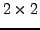
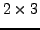
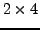

Next: Definitions of fixed size
Up: Fixed size matrices and
Previous: Setting/extracting parts of fixed
Contents
Fixed size matrices
Matrices of sizes , , ,  ,
,
 and
and  are represented by specific structures
in Gandalf. There is a large set of functions which is repeated across
every size of matrix. There is also a set of functions specific to square
matrices. In both cases we will choose a single size of matrix and describe
the functions available for that size. The sizes we will use are
matrices for the functions available to every size of matrix, and
matrices for the functions specific to square matrices.
are represented by specific structures
in Gandalf. There is a large set of functions which is repeated across
every size of matrix. There is also a set of functions specific to square
matrices. In both cases we will choose a single size of matrix and describe
the functions available for that size. The sizes we will use are
matrices for the functions available to every size of matrix, and
matrices for the functions specific to square matrices.
Subsections
Philip McLauchlan
2009-01-27